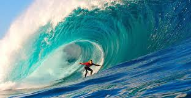
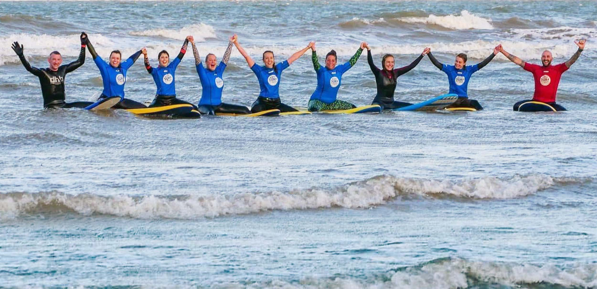

Surfing is a popular water sport where people ride the face of an ocean wave using a surfboard. It requires balance, coordination, fitness, and an understanding of ocean conditions such as tides, currents, and wave patterns. Surfing can be enjoyed as both a recreational activity and a competitive sport, attracting millions of people around the world. In New Zealand, surfing is an important part of coastal culture and provides a fun way for people to enjoy the outdoors while developing new skills and respecting the natural environment.
Surfers use a range of equipment to improve both their safety and performance in the water. The most important piece of equipment is the surfboard, which comes in different shapes and sizes depending on the surfer's experience level and the type of waves they want to ride. Most surfers in Southland also wear wetsuits because the ocean is cold throughout the year. Other equipment includes a leash, which keeps the board attached to the surfer after a fall, and surf wax, which provides extra grip while standing on the board. Choosing the right equipment makes surfing safer, more comfortable, and more enjoyable.
New Zealand is recognised as one of the world's best surfing destinations due to its long coastline and consistent ocean swells. Surf breaks can be found throughout both the North and South Islands, offering waves suitable for beginners through to experienced surfers. Southland is home to several well-known surf locations, including Colac Bay, Oreti Beach, and Porpoise Bay, which are popular because of their reliable waves and beautiful coastal scenery. Surfing continues to grow in popularity across New Zealand, with local surf clubs, competitions, and schools helping more people become involved in the sport while promoting water safety and environmental awareness.

